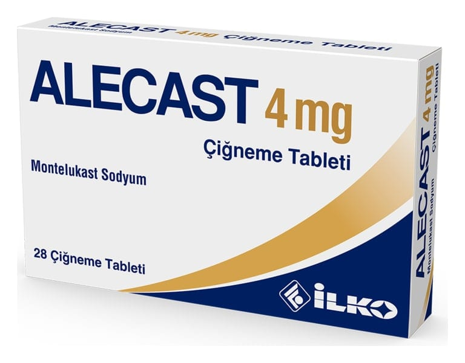

Alecast 4 mg Çiğneme Tableti, 28 Adet

Ne için kullanılır
KT · Bölüm 1ALECAST, lökotrienler adı verilen maddeleri engelleyen bir lökotrien alıcısı (reseptör) antagonistidir (karşıt etki gösteren). Lökotrienler akciğerlerde solunum yollarının daralmasına ve şişmesine neden olur. ALECAST, lökotrienleri engelleyerek astım belirtilerini iyileştirir ve astımın kontrol altına alınmasına yardımcı olur ve mevsimsel alerji belirtilerini azaltır (saman nezlesi veya mevsimsel alerjik nezle (rinit) olarak da bilinir.
ALECAST, inatçı astımın tedavisi ve alerjik nezlenin (rinitin) belirtilerinin giderilmesi için reçetelenir:
Astım: ALECAST 4 mg çiğneme tableti, 2 -5 yaş arası pediyatrik hastalarda inatçı astımın tedavisinde kullanılır.
Doktorunuz, çocuğunuzun astımının belirtilerineve ciddiyetine bağlı olarak ALECAST'ın nasıl kullanılması gerektiğini belirleyecektir.
ALECAST’ı bir astım atağında kısa süreli iyileşme sağlamak için kullanmayın. Astım atağı yaşadığınızda doktorunuzun astım ataklarının tedavisi için size söylediklerini yapmanız gerekir.
Alerjik Rinit: ALECAST, alerjik rinit belirtilerinin (hapşırık, burun tıkanıklığı, burun akıntısı ve kaşıntısı) kontrolüne yardımcı olmak amacıyla kullanılır. ALECAST çiğneme tableti, 2-5 yaş arası pediyatrik hastalarda mevsimsel alerjik rinit ve pereniyal alerjik rinit (yıl boyu devam eden) belirtilerinin giderilmesi için kullanılır.
ALECAST 4 mg çiğneme tablet 28 tabletlik ambalajlarda kullanıma sunulmuştur. Her bir tablet 4 mg montelukast içerir. Astım nedir? Astım uzun süreli bir hastalıktır. Astım şunları içerir: • Daralan solunum yollarından ötürü nefes almada zorluk. Solunum yollarının bu daralması çeşitli durumlara göre iyileşir ya da kötüleşir. • Sigara dumanı, polen, soğuk hava veya egzersiz gibi birçok şeye tepki veren hassas solunum yolları • Solunum yollarında şişme (iltihap)
Astım belirtileri şunlardır: • Öksürük • Hırıltılı solunum • Göğüs sıkışması
Alerjik rinit nedir? • Saman nezlesi olarak da bilinen mevsimsel alerjik rinit ağaç, çimen ve ot polenleri gibi ev dışında bulunan alerjenler ile tetiklenir. • Uzun süre devam eden (pereniyal) alerjik rinit yıl boyu görülebilir ve genellikle ev tozu akarları, hayvan tüyü kepeği ve/veya küf sporları gibi ev içindeki alerjenler ile tetiklenir. • Alerjik rinit belirtileri aşağıdakileri içerebilir: - Burun tıkanıklığı, akıntısı ve/veya kaşıntısı - Hapşırık